Map data © OpenStreetMap contributors · © OpenMapTiles · OpenFreeMap
Site Evaluation & Navigation Tool
futurecity.andyyaro.com
Offline
Example City sample · invented data
example-city.csv
Four published parts
The study's weights. Together they make a 0 to 100 readiness score.
0
random reweightings,
to test every rank
Your file stays on this device
The model runs in this browser tab.
Accessible PDF saved
Made on this device. Nothing uploaded.
Public data fills the gaps
Your own values always win.
A built-in assistant
You review what it can see first.
Works offline
Keep planning without a connection.
Now
it's
your
turn.

Plan
smarter
charging
with
your
own
data.
app.futurecity.andyyaro.com
Try it free
The study behind it:
futurecity.andyyaro.com
Planning support, not engineering advice. Example City is invented sample data.